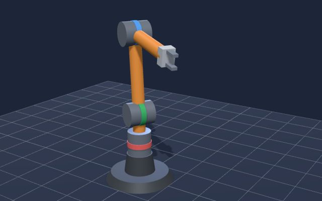
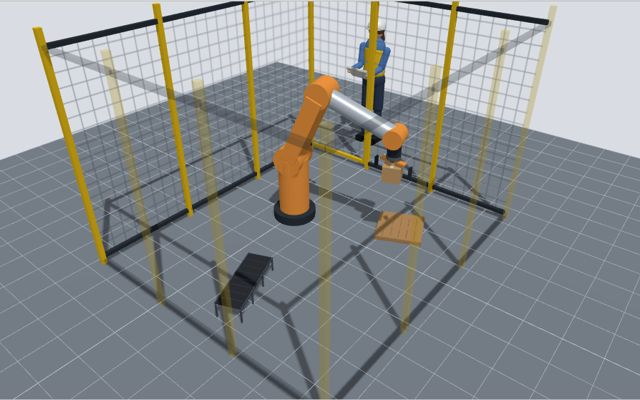
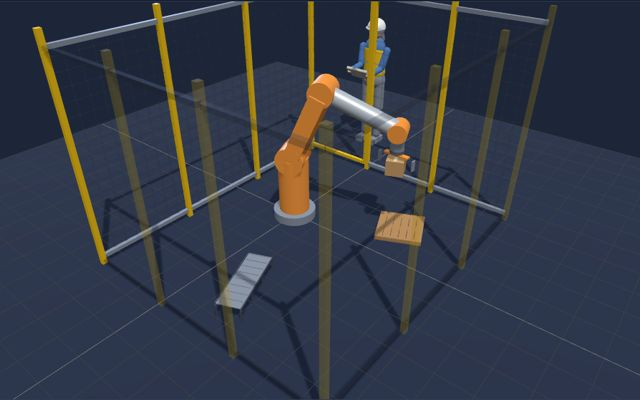

01
Découvrir en jouant
Rien à installer, rien à savoir : faites bouger des robots en 3D et voyez comment ils marchent.


Construire votre premier robot Choisissez un robot, assemblez-le en 3D pièce par pièce, bougez chaque articulation et voyez ce qu'elle fait. Le meilleur point de départ. Ouvrir
 Laboratoire des roues
Poussez chaque type de roue en 3D : fixe, folle, orientable, omni, Mecanum, sphérique et chenilles.
Ouvrir
Laboratoire des roues
Poussez chaque type de roue en 3D : fixe, folle, orientable, omni, Mecanum, sphérique et chenilles.
Ouvrir


Opérations industrielles en 3D Regardez un robot palettiser, encaisser, étiqueter et contrôler, dans une cellule avec sa barrière de sécurité. Ouvrir